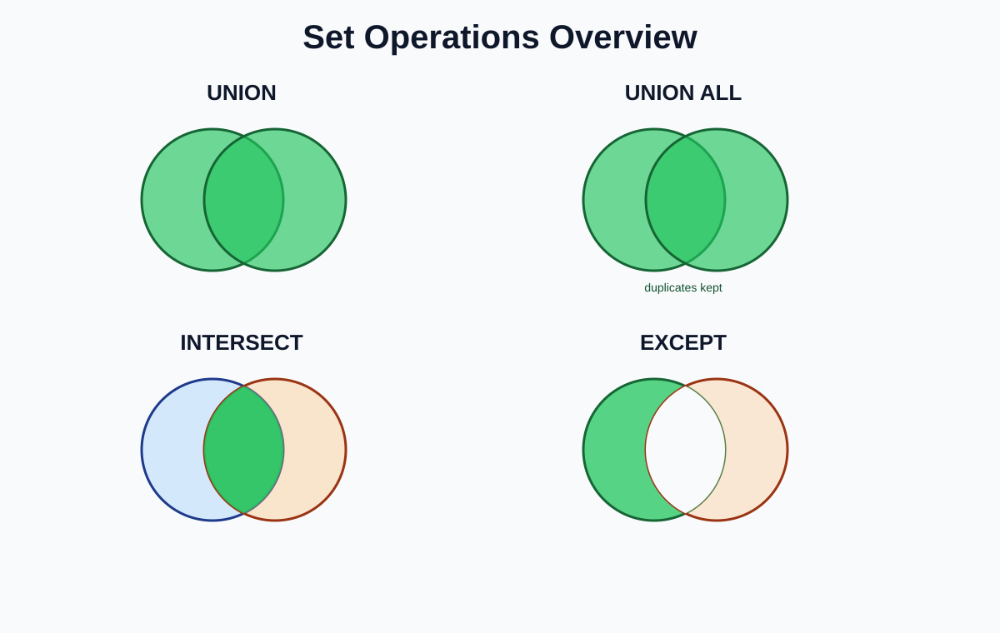
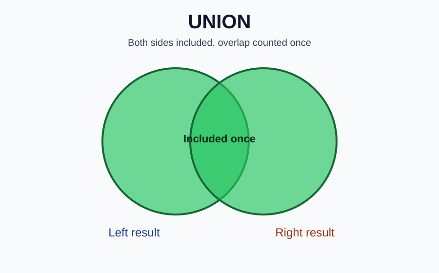
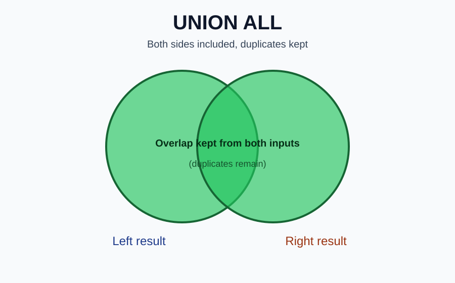
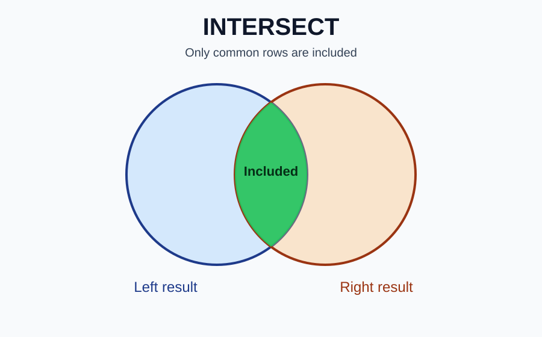
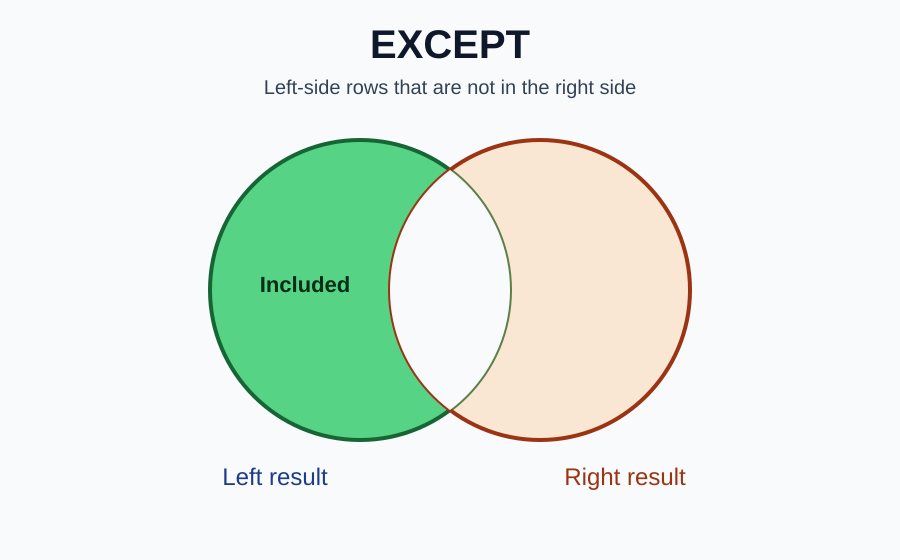

Back to Course 3 landing page | Open Join Types Visual Guide | Open Join Business Scenarios
Set operations combine result sets from SELECT statements. They do not join tables side-by-side. They stack or compare rows.
JOIN = side-by-side using keys.
SET OPERATION = stack or compare SELECT results.
Set operations do not use ON or USING. Each SELECT must return the same number of columns. Matching columns must have compatible data types. Final column names come from the first SELECT.

Meaning:
Returns all rows from both SELECT results and removes exact duplicates.

SQL pattern:
SELECT column1, column2
FROM table_a
UNION
SELECT column1, column2
FROM table_b;Business examples:
Use when:
You want one clean list and duplicates should be removed.
Meaning:
Returns all rows from both SELECT results and keeps duplicates.

SQL pattern:
SELECT column1, column2
FROM table_a
UNION ALL
SELECT column1, column2
FROM table_b;Business examples:
Use when:
Duplicates matter or you want raw combined data.
Warning:
UNION ALL can return more rows than UNION because it keeps duplicates.
Meaning:
Returns only rows that appear in both SELECT results.

SQL pattern:
SELECT column1, column2
FROM table_a
INTERSECT
SELECT column1, column2
FROM table_b;Business examples:
Use when:
You want what both result sets have in common.
Trap:
INTERSECT compares the full selected row, not just one key column.
Meaning:
Returns rows from the first SELECT result that do not appear in the second SELECT result.

SQL pattern:
SELECT column1, column2
FROM table_a
EXCEPT
SELECT column1, column2
FROM table_b;Business examples:
Use when:
You want left-side records that are missing from the right side.
Trap:
Order matters. A EXCEPT B is not the same as B EXCEPT A.
| Question | Set operation |
|---|---|
| Combine two lists and remove duplicates? | UNION |
| Combine two lists and keep duplicates? | UNION ALL |
| Find rows common to both lists? | INTERSECT |
| Find rows in the first list but missing from the second? | EXCEPT |
| Concept | Joins | Set operations |
|---|---|---|
| Shape | side-by-side | vertical stack/compare |
| Needs ON/USING? | usually yes | no |
| Column count must match? | no | yes |
| Main question | how are rows related? | which rows belong in final set? |
I use joins when I need to combine related columns from different tables using keys. I use set operations when I need to combine or compare complete SELECT results. UNION removes duplicates, UNION ALL keeps duplicates, INTERSECT keeps only common rows, and EXCEPT returns rows from the first result that are missing from the second.
Back to Course 3 landing page | Open Join Types Visual Guide | Open Join Business Scenarios